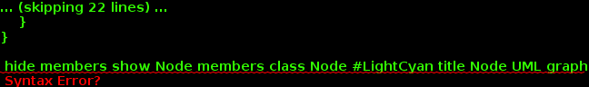

N - the content typepublic class Node<N> extends Object implements Comparable<Node<N>>, Cloneable
This class gives a standard representation for a node of a graph.
A node is composed of a content and an automatically computed and unique index.
This class implements the Comparable interface aiming at sorting nodes by providing the compareTo(org.thegalactic.dgraph.Node) method that compares the node with those in parameter by comparing their indexes.
Since nodes are comparable, they can be stored in a sorted collection, and in particular in a sorted set where set operations are provided.

| Constructor and Description |
|---|
Node()
Constructs a new node with a null content.
|
Node(N content)
Constructs a new node containing the specified content.
|
| Modifier and Type | Method and Description |
|---|---|
Node |
clone()
Returns a clone of this node.
|
int |
compareTo(Node node)
Compares this node with those in parameter, based on their identifiers.
|
boolean |
equals(Object object)
Compares this node with the specified one.
|
N |
getContent()
Get the content.
|
int |
getIdentifier()
Get the identifier.
|
boolean |
hasContent()
Test if this node has a content.
|
int |
hashCode()
Compute the hash code.
|
Node |
setContent(N content)
Set the content.
|
String |
toString()
Returns a string representation of this node without spaces.
|
public Node(N content)
Constructs a new node containing the specified content.
Identifier of this node is initalized with the count variable which is the incremented.
content - Content for this nodepublic Node()
Constructs a new node with a null content.
Identifier of this node is initalized with the count variable which is the incremented.
public final int getIdentifier()
Get the identifier.
public final N getContent()
Get the content.
public final Node setContent(N content)
Set the content.
content - Content for this nodepublic final boolean hasContent()
Test if this node has a content.
public String toString()
Returns a string representation of this node without spaces.
public Node clone() throws CloneNotSupportedException
Returns a clone of this node.
clone in class ObjectCloneNotSupportedExceptionpublic boolean equals(Object object)
Compares this node with the specified one.
public int hashCode()
Compute the hash code.
public final int compareTo(Node node)
Compares this node with those in parameter, based on their identifiers.
The result is zero if the identifiers are equal; positive if this node’s identifier is greater, and negative otherwise. This comparison method is needed to define a natural ordering. It allows to use objects of this class in a sorted collection.
compareTo in interface Comparable<Node<N>>node - the specified element to be compared with this nodeCopyright © 2010–2016 The Galactic Organization. All rights reserved.